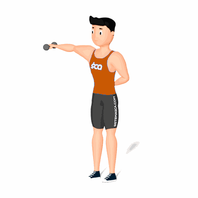

Elevação Lateral Unilateral com Halteres

Esse exercício trabalha de forma unilateral o fortalecimento dos músculos deltoides, auxiliando na correção de desiquilíbrio na hipertrofia.
Ficha Técnica
Tipo: Musculação
Grupo Muscular: Ombro
Aparelho: Nenhum
Músculos: Nenhum
Como realizar
- Em pé, com os pés alinhados com os ombros, segure um halter com a palma da mão voltada para dentro, deixando livre ao lado do corpo;
- Eleve o braço com halter na lateral até que fique na altura do ombro;
- Pause, em seguida, desça o peso de volta à posição inicial.
 RC STORE
RC STORE